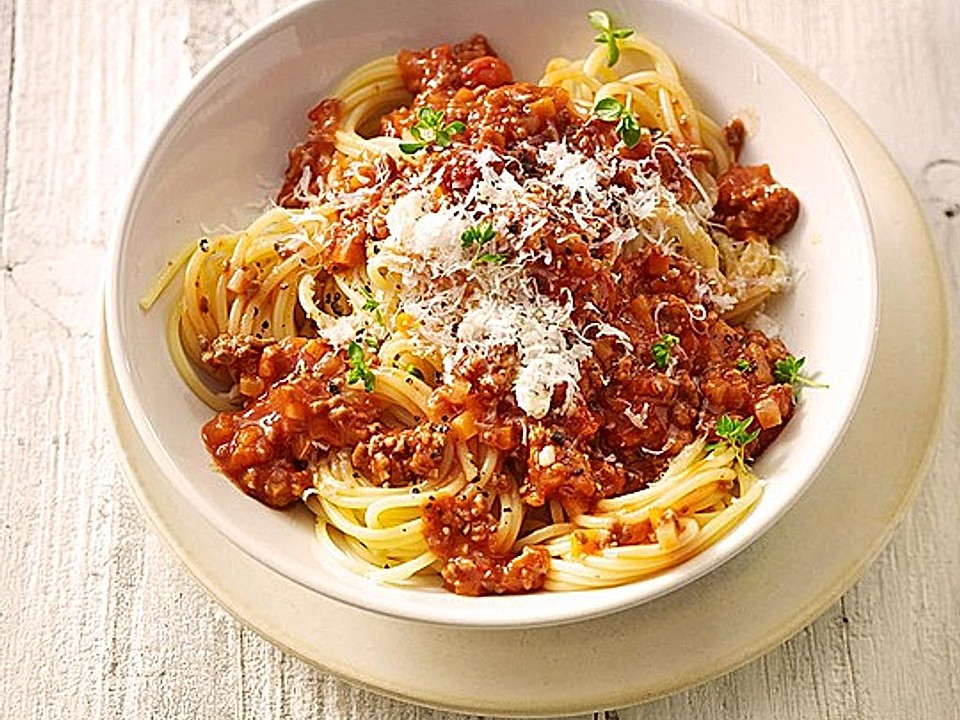

Spaghetti Bolognese Recipe

Description
Spaghetti bolognese (sometimes called spaghetti alla bolognese) is a pasta dish that is popular outside Italy, but not part of traditional Bolognese or even Italian cuisine in general. The dish is generally perceived as inauthentic when encountered by Italians abroad. It consists of spaghetti served with a sauce made from tomatoes, minced beef, garlic, wine and herbs; sometimes minced beef can be replaced by other minced meats. In this sense the sauce is actually more similar to Neapolitan ragù from the south of Italy than the northern Bolognese version of ragù.
Ingredients
- 1 pack of spaghetti
- 2 tbsp olive oil
- 3 strips of bacon
- 1 large onion, finely chopped
- 1 stalk celery, finely chopped
- 1 carrot, finely chopped
- 1 pound ground beef
- 2 cans crushed tomatoes
- 2 tbsp tomato paste
- some parmesan cheese
- various herbs and spices
Steps
- Bring a large pot of lightly salted water to a rolling boil. Cook the spaghetti in the boiling water until cooked through yet firm to the bite, about 12 minutes; drain.
- Heat the olive oil in a large pot over medium heat. Cook the bacon in the oil until crisp, 8 to 10 minutes. Stir the onion, celery, carrot, and oregano into the bacon; continue cooking until the vegetables begin to soften, another 8 to 10 minutes. Add the garlic and cook until fragrant, about 2 minutes. Crumble the ground beef into the vegetable mixture; cook and stir until the beef is completely cooked and no longer pink, 8 to 10 minutes.
- Pour the balsamic vinegar over the ground beef mixture; allow to simmer until the liquid evaporates, about 5 minutes. Stir the crushed tomatoes, tomato paste, and sugar into the ground beef mixture; bring the mixture to a boil, season with salt and black pepper, and remove from heat. Stir the fresh basil into the mixture.
- Ladle the sauce over the cooked spaghetti. Top with Parmesan cheese to serve.